兼顾设施安全与便利的
门禁管理系统
将人脸识别、IC卡等认证技术与电锁、控制设备、管理软件相结合，构建契合设施运营方式的门禁管理系统。
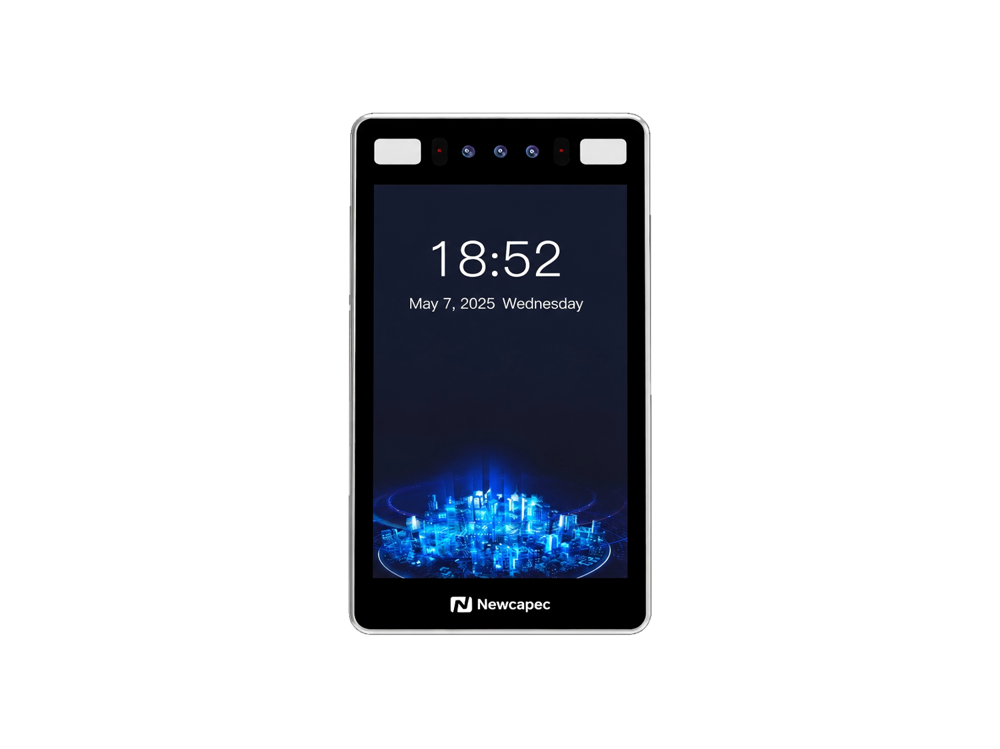
您是否有这些门禁管理的困扰？
不是"想买一台人脸识别机"，而是"想改善门禁管理"——我们正是为此提供选型与构成的支持。
把门禁管理当作系统来考虑，而不只是设备
门禁管理系统并非仅由认证终端构成。
通过将用户认证、门的开锁/上锁、出入信息记录、权限管理等相结合，构建契合设施的安全环境。
并根据需要，研究与管理服务器、云、网络、考勤管理、访客管理、安防/监控系统等的联动。
（人脸/卡片/二维码）
主要认证方式
可根据设施的运营方式选择认证方式。
人脸识别
利用面部信息进行本人确认的方式。无需携带卡片，可非接触认证。
- 免卡、非接触、便利性高
- 需考虑认证精度、防伪、安装环境
- 确认面部数据与个人信息的处理方式
IC卡·NFC等
使用卡片或IC介质的方式。易于沿用既有卡片运营，权限变更也便于管理。
- 易于沿用既有卡片运营
- 便于管理用户权限变更
- 与既有卡片/读卡器的兼容性按设备逐一确认
二维码
使用二维码的认证方式。适合访客管理、临时访问权限等按用途的应用。
- 适合访客、临时使用
- 可灵活设计发放与失效流程
其他
视项目而定，也可研究密码、指纹等生物识别，以及多种认证的组合。
- 密码·生物识别·多因素认证
- ※实际支持的方式因采用的产品/系统而异
认证终端·设备阵容
从认证终端到控制器、读卡器，按构成选定设备。
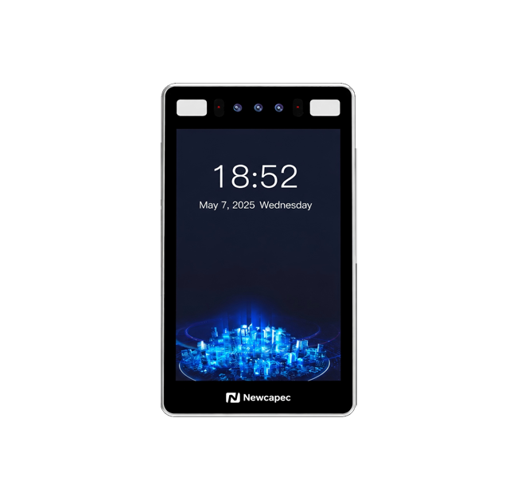
7英寸人脸识别门禁终端
配备7英寸屏幕的人脸识别门禁终端，支持多模态认证。
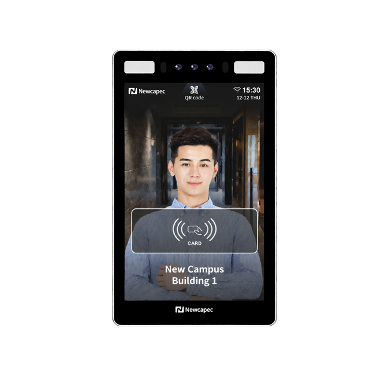
8英寸人脸识别门禁终端
融合AI、生物识别与IoT技术，实现快速的本人认证与门禁管理。

人脸识别考勤终端
以人脸识别与多模式认证，对应本人确认、考勤与门禁管理。
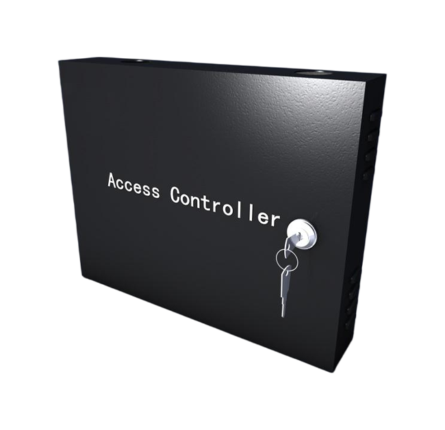
智能控制器
集中管理多台安防设备，统一权限控制。
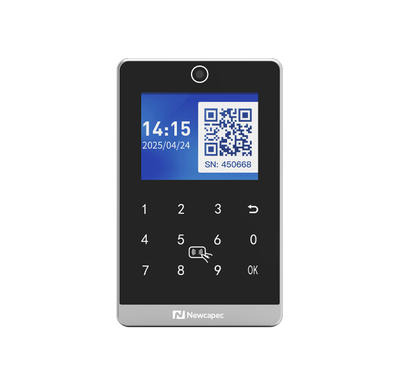
二维码·读卡器
支持二维码与卡片认证，在多种场景下实现安全、高效的门禁管理。
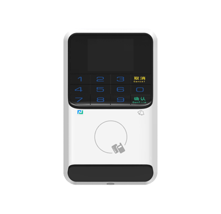
读卡器
配备OLED显示屏、卡片认证与Wiegand兼容，提供稳定的本人确认。
※所列产品为构成示例。实际设备选型将根据出入口数量、使用人数、既有设备与安全要求进行。
认证终端的主要特点
兼具坚固性、处理性能、操作性与认证灵活性的终端。
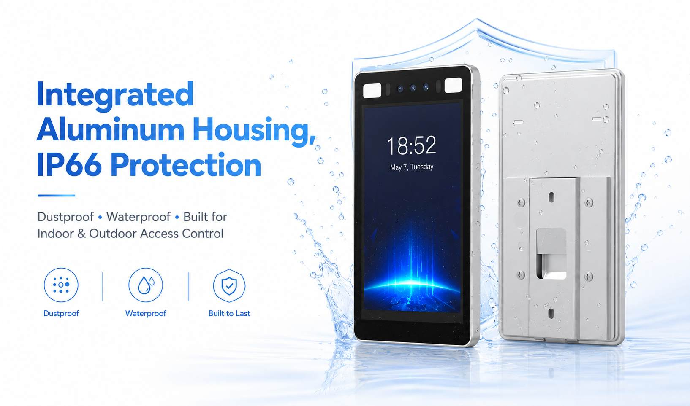
IP66等级的坚固外壳
坚固的外壳设计，可用于户外或有粉尘、水汽的环境。
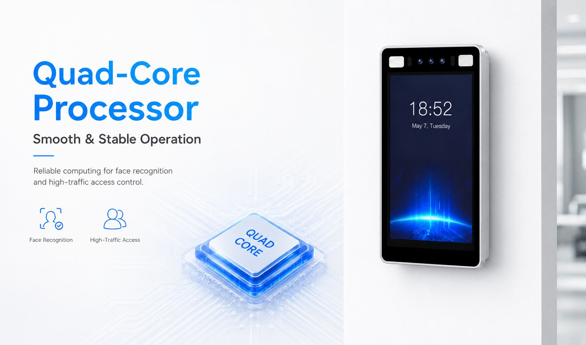
支撑稳定运行的处理性能
四核处理性能，实现稳定的认证运行。
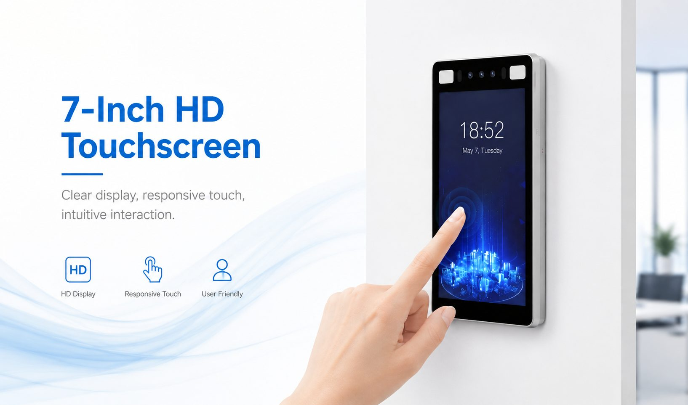
直观的7英寸高清触控操作
7英寸高清触摸屏，实现清晰易懂的操作与显示。
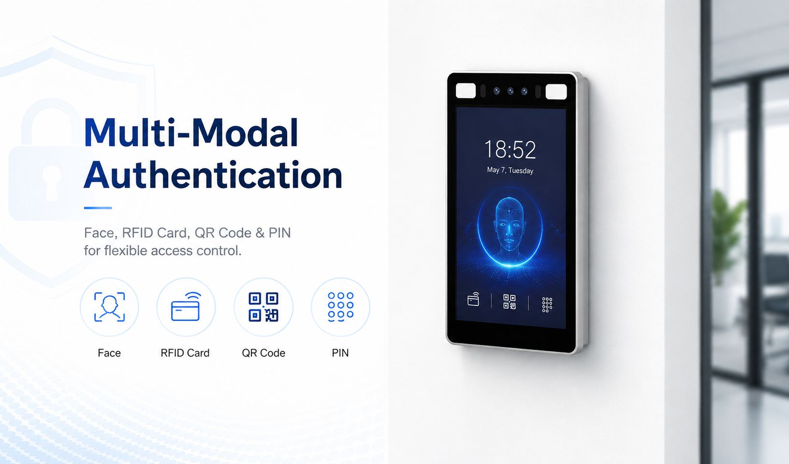
支持多模态认证
支持人脸、卡片、二维码等多种认证方式，实现灵活的访问运营。
系统构成
从认证终端到门设备，统筹考虑整个系统。
| 构成要素 | 作用 |
|---|---|
| 认证终端 | 认证用户（人脸/卡片/二维码等） |
| 读卡器 | 读取IC卡等 |
| 二维码读取器 | 读取二维码 |
| 控制装置 | 控制开锁/上锁 |
| 电锁 | 门的上锁/开锁 |
| 退出按钮 | 从内侧退出 |
| 传感器 | 监测门的状态等 |
| 网络 | 连接终端与管理系统 |
| 管理软件 | 管理用户、权限、日志等 |
| 服务器／云 | 管理数据 |
※实际的系统构成将在确认出入口数量、使用人数、既有设备、安全要求、网络环境、管理方式及所需日志/报表后决定。
适用于各类设施的门禁管理
工厂、物流、研究所、数据中心、办公室等，按现场研究构成方案。
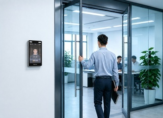
工厂·制造设施 / 研究所·研发设施
对员工、协力公司、关系人员的门禁管理。也研究对特定区域或管理区域的访问控制。
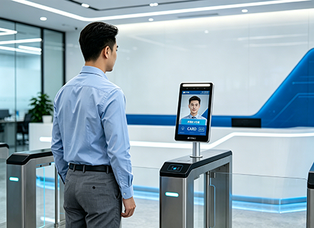
物流中心·仓库
对于有多个出入口或通行量大的设施，研究契合运营的认证方式与设备构成。
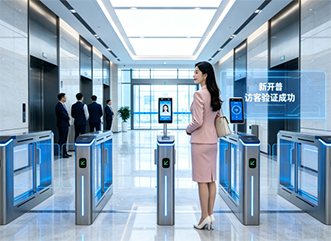
数据中心
对重要设备、管理区域的访问控制。确认与既有安防设备或监控系统的关系。
办公室·营业所
对员工的门禁管理及对访客的访问管理。也可研究从既有卡片运营向人脸识别等的迁移。
出云创安的优势
不只是销售设备，而是从需求梳理到导入支持。
海外产品 × 日本导入
支持海外厂商产品的日本导入、定制与技术调整，依据需求选定最合适的设备。
作为系统来构建
不仅是终端，还将控制盘、电锁、网络、管理软件一并作为系统来构成。
与既有设备联动
研究既有电锁、控制盘、门禁管理系统的利用，以及与考勤/设施管理系统的联动。
与既有设备·系统的联动
不是全部更换，而是也考虑利用既有资产。
门禁管理不仅可单独使用，通过与设施内的其他系统联动，可实现更高效的运营。
研究与考勤管理、访客管理、监控摄像、设施管理系统、人事/员工管理等的联动。
| 联动时的确认事项 | 内容 |
|---|---|
| API / SDK | 确认厂商提供的API/SDK是否具备 |
| 通信方式·数据格式 | 确认联动所需的通信方式与数据格式 |
| 用户信息同步 | 确认用户信息·权限的同步方式 |
| 出入日志联动 | 确认出入日志的联动方式 |
| 软件开发 | 根据需要研究面向日本的软件开发·联动 |
※实际的开发可行性、开发费用、周期与对应范围按项目逐一确认。
导入流程
从需求梳理到导入支持，按项目对应。
咨询·需求了解
请告诉我们当前的课题、设施与运营情况。
需求梳理
梳理出入口、使用人数、既有设备与安全要求。
设备选型·系统构成
提出认证方式、设备与系统构成方案。
与既有设备的联动调整
确认与既有设备或系统联动的可行性与方式。
与厂商的技术调整
与海外厂商进行技术调整与定制。
导入支持
支持安装、设置到运营开始。
常见问题
可以只购买人脸识别终端吗？
可以就单体设备进行咨询，但出云创安将门禁管理视为系统，提供从需求梳理到设备选型、系统构成与导入的全程支持。欢迎先行咨询。
可以沿用既有的电锁或卡片吗？
我们会在确认既有电锁、控制盘与卡片运营是否可用后再行提案。兼容性按采用设备逐一确认。
人脸识别的个人信息如何处理？
面部数据的管理方式与个人信息的处理，将根据采用的产品/系统及贵方的运营方针进行确认与研究。
能与考勤管理系统联动吗？
在确认API/SDK是否具备及通信方式后，研究与考勤/设施管理系统的联动。
能统一管理多个出入口或据点吗？
根据出入口数量、据点构成与使用人数，研究包含控制器与管理软件在内的构成。
可以导入海外厂商的产品吗？
海外厂商产品的日本导入、定制与技术调整正是出云创安的优势。我们将依据需求对应。
对应区域是哪里？
视项目而定，请先与我们联系。
导入费用大约是多少？
因设备构成、系统规模与联动范围而异。将在了解需求后提供报价。